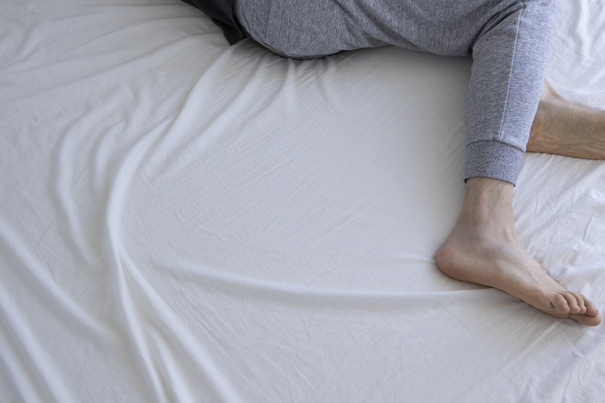
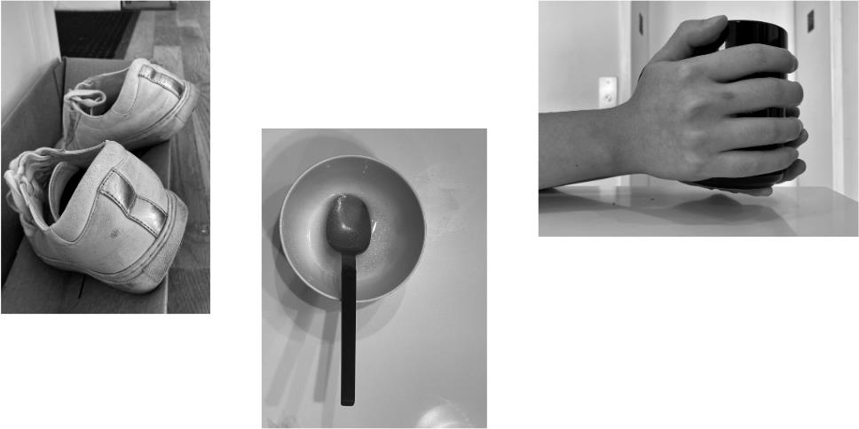
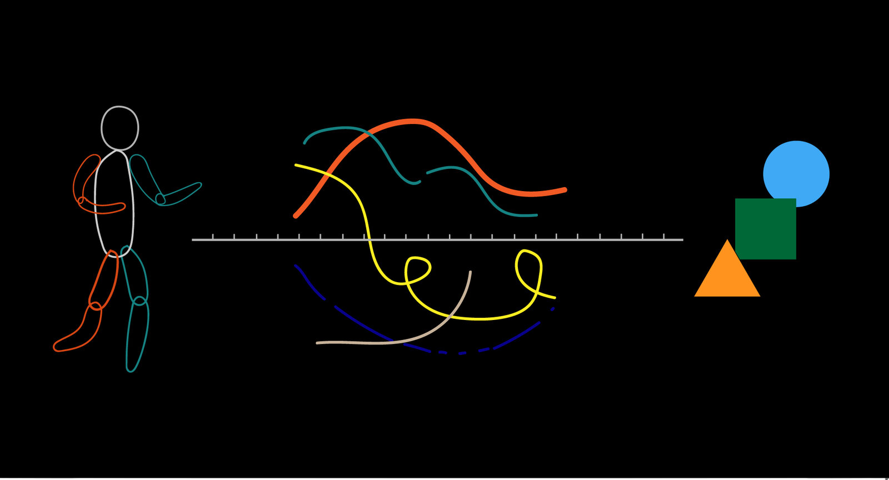
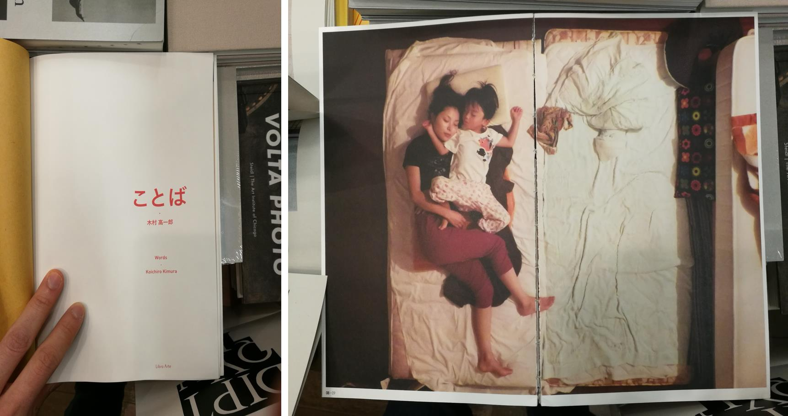
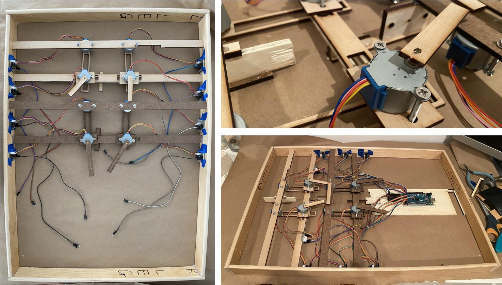
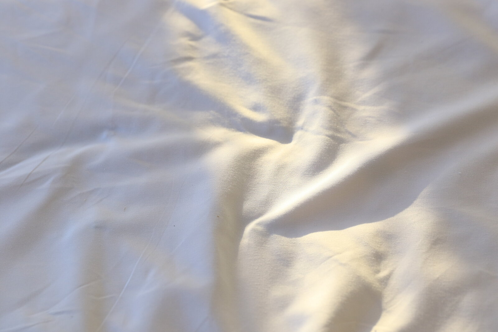
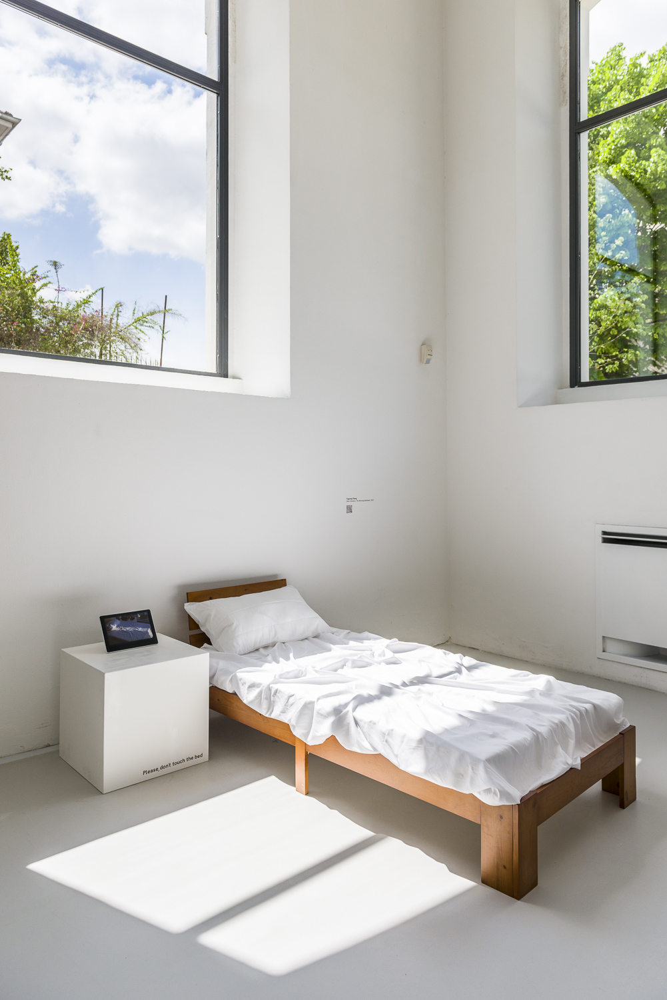
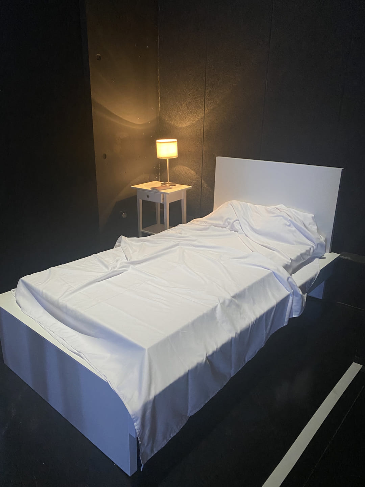

(Non-)Human

What is human, what is not human, what is in-between? (Non-)Human is an art installation that conjures the hidden human-ness in objects and imagines a speculative world where a human exists in non-human forms.
Story
We live a life surrounded by objects we build to serve us — curtains, lamps, and many others. We use our body to interact with these objects: rubbing our face against warm towels, or sinking into a fluffy bed. We, as humans, rarely consider them to be part of us. We tend to think of ourselves as different — we’re the ones with spirituality, reason, intelligence, while they’re not.
Yet, objects keep our traces, like dents in our shoes, or the erased keys on our laptop. Objects carry our memories, like an inherited music box, or a bowl with the smell of mom’s favorite recipe. Objects also shape us either physically or behaviorally: a scar from a knife cut; a spontaneous “sorry” when we bump into a table. All of these suggest a possible deeper connection between humans and objects, which we don’t notice on a daily basis.

The advancements in modern physics have pointed out the similarity between humans and objects in terms of materiality. Emerging technology such as ML / AI has shown the promise of non-human intelligence through computation. More than ever, the borderline between human and object has become blurred. If there is a spectrum that measures the level of human-ness vs. object-ness, what lies in the middle ground? How close might an object endowed with a certain level of intelligence or consciousness be to a human?
As a response, (Non-)Human is a series of art installations that explore the semi-human, semi-object territory by creating humans in non-human forms. The initial piece of this series is a bedsheet that tweaks and bends in the form of its owner, now up and out for the day.

Research
The project is based on research in three domains: discoveries in physics and cosmology regarding the origin of life and human; philosophical notions about the relationship of consciousness to the universe as a whole; and related religious roots.

Discoveries in physics and cosmology have brought forth the concept that humans, and all life and stuff on earth, are star stuff — all born of the Big Bang. This has provided grounds for this project to discuss both the similarity in materiality between human and object, and the possibility of creating consciousness / intelligence in objects by understanding how the “human events” take place. Research into the theory of consciousness, or the philosophy of mind, provides a broader picture on the nature of consciousness that ranges from consciousness in matter (e.g. Panpsychism) to consciousness in machines (e.g. Post-/Trans-humanism, Humanity+, and the coming AI take-over).
(Non-)Human is the result of approaching this topic from a technological perspective within this big picture — especially by using technology as a bridge to connect human behaviors with object behaviors. Finally, research into related religious roots, including Buddhism and Shinto, allows this project to borrow the metaphor of gods / spirits that inhabit all entities and to build on top of these historical touchstones under the semi-human, semi-object theme with a contemporary interpretation.
The Making
Human as Imprints



The project was inspired by an artwork called Kotoba by the Japanese artist Kimura Koichiro. He took a series of photographs of his family sleeping — and as you can see, although he’s not in the picture, the imprints on the bedsheet give away his existence.
This gave me the idea of re-creating imprints. By putting a human body on top of a flat bedsheet, imprints can be made as the body moves and rubs against the fabric. Then when the body is removed, the imprints are revealed.
To find out what type of movements I should use to create the imprint, I recorded myself sleeping overnight, and narrowed it down to three major categories: side curl, laying flat, and roll-over.
Movement mockups using human-like objects such as wooden mannequins were performed to get an idea of the look and feel of human imprints, as well as the design of the mechanical structure needed for the installation.
Bed Frame & Motors as Skeleton

A bed frame prototype mounted with eight stepper motors was created to validate the mechanical structure. These steppers represent eight major joints on a human body — shoulders, elbows, hips, and knees.
They were attached to inter-locked structures that can move in either a linear or circular fashion, which gave them the inherent connection that resembles the movement of a human body.

After that, a flat foam surface with carved holes was mounted to make room for the structure to move in between. Finally, a piece of bedsheet is attached on top, so that it can move with the structure underneath.
ML as Abstraction


To figure out the mapping between joint movement of a human skeleton and joint movement of the bedsheet, I calibrated my own movement with PoseNet and RealSense, and used it as a baseline to determine the range, velocity, and dynamics of the motors’ movements.
In order to create an abstraction of a human and use it to drive the actual movement of the bedsheet, I trained a custom GAN with 300+ hours of my sleeping recordings, and applied movement tracking on top of the generated images. These movements were then recorded in MongoDB, and became the dataset I used to drive the bedsheet.
The final result is a moving bedsheet whose movements are generated as time goes by. It originates from a human, but it is beyond human. These abstractions of moving elbows and knees are what conjure the human-ness in this non-human object.



Exhibition Views

Photo by Sebastiano Luciano; courtesy Re:Humanism.

Photo by Saki Hibino.